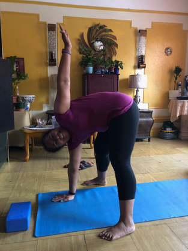

You can find workout programs on the app store, DVDs, or a fitness center.
-
Here are some exercise examples:
- Yoga
- Cardio Workout
- Swimming
- Running
- Pilates
- Boxing
- High Intensity Interval Training (HIIT)
Before starting any workout program consult with your doctor.
Make sure you do a few minutes of warm up before you begin your workout.If you can not afford a gym or workout equipment, there are several exercises that you can do at home such as, squats, planks, crunches, jumping jacks, running, walking, and stair climbing. Ask yourself, how many times a day can I work out? one day a week, three, maybe more? How many minutes can I do? 15 minutes, 30 minutes or even an 1 hour. Set your calendar and for the times you want to workout and devote yourself to them. Always have water handy that's a must.
My workout schedule is as follow 30 minutes:
-
Monday
- Upperbody
- Easy Run
- Yoga
-
Tuesday
- Pilates
- Walk
- Yoga
-
Wednesday
- Dance-DVD
- Core
- Yoga
-
Thursday
- Rest Day
- or
- Stretch
-
Friday
- HIIT
- and
- Yoga
-
Saturday
- Long Run
- Yoga
-
Sunday
- Rest Day
You create the schedule and exercises that fit you. I like to work out during the mornings, and do some yoga at night. You must have a day or two of Rest it's very important and will help with muscle recovery.